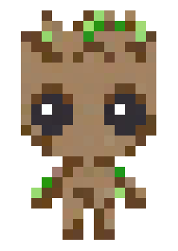

TREES & BINARY SEARCH TREES
01. S.H.I.E.L.D. MISSION BRIEFING // OP-GROOT-06 THE SACRED YGGDRASIL DATA CANOPY
02. FORMAL PROBLEM SPECIFICATION & INVARIANTS ACADEMIC CURRICULUM
A Tree is a non-linear hierarchical data structure consisting of a collection of nodes connected by directed edges, with zero cycles. A distinguished node called the Root sits at top level, with each descendant node having exactly one parent.
Binary Search Tree (BST) Ordering Invariant: For any node \(u\) with value \(K\):
- All keys in the left subtree of \(u\) must be strictly less than \(K\): \( orall x \in ext{Left}(u), x < K\).
- All keys in the right subtree of \(u\) must be strictly greater than \(K\): \( orall y \in ext{Right}(u), y > K\).
Tree Traversal Strategies:
- In-Order (Left, Root, Right): Produces elements in strictly ascending sorted order for any BST.
- Pre-Order (Root, Left, Right): Ideal for cloning trees and serializing hierarchical structures.
- Post-Order (Left, Right, Root): Essential for bottom-up computation (e.g., directory size calculation, expression tree evaluation, and garbage collection deletion).
03. BRUTE FORCE VS ALGORITHMIC OPTIMALITY STRATEGIC COMPARISON
In an unbalanced BST, inserting elements in sorted order (\(1, 2, 3, \dots, n\)) degrades the tree into a degenerate linear linked list of height \(h = n\). This causes lookup time to collapse to \(O(n)\). Self-balancing trees (AVL Trees, Red-Black Trees) perform rotations upon insertion/deletion to enforce \(h = \Theta(\log n)\), guaranteeing \(O(\log n)\) search time in all cases.
Height \(h = n\).
Search: \(O(n)\)
Tree behaves identically to a singly-linked list; no binary search advantage.
Height \(h \le 1.44 \log_2(n)\).
Search: \(\Theta(\log n)\)
Logarithmic height bounds guarantee sub-millisecond lookups across billions of records.
04. MATHEMATICAL PROOFS & RECURRENCES KATEX FORMULATION
Binary Tree Structural Properties:
- Maximum nodes at depth \(d\) (root at \(d=0\)): \(2^d\).
- Maximum total nodes in binary tree of height \(h\): \(\sum_{i=0}^{h} 2^i = 2^{h+1} - 1\).
- Minimum height for a tree with \(n\) nodes: \(\lceil \log_2(n + 1) \rceil - 1 \implies \Omega(\log n)\).
- Number of leaf nodes \(L\) in a full binary tree with \(I\) internal nodes: \(L = I + 1\).
Recurrence for Balanced Tree Search:
\[ T(n) = T(n/2) + O(1) \implies T(n) = \Theta(\log n) \]05. STEP-BY-STEP WORKED CALCULATION EXAMPLE NUMERICAL TRACE
Worked Example: Insert sequence [50, 30, 70, 20, 40, 60, 80] into an initially empty BST, then execute In-Order Traversal.
- Insert 50: Root =
50. - Insert 30: \(30 < 50 \implies\) Left child of 50.
- Insert 70: \(70 > 50 \implies\) Right child of 50.
- Insert 20: \(20 < 50 o 20 < 30 \implies\) Left child of 30.
- Insert 40: \(40 < 50 o 40 > 30 \implies\) Right child of 30.
- Insert 60: \(60 > 50 o 60 < 70 \implies\) Left child of 70.
- Insert 80: \(80 > 50 o 80 > 70 \implies\) Right child of 70.
- In-Order Traversal (L, Root, R):
Left subtree of 50:(20, 30, 40)
Root:50
Right subtree of 50:(60, 70, 80)
Result:[20, 30, 40, 50, 60, 70, 80](Strictly sorted!).
06. RETRO PHYSICAL GAME SIMULATION & YOUR CUSTOM INPUTS LIVE SIMULATION CONSOLE
Watch Groot branch left (<) and right (>) from the root to insert and search keys.
07. ASYMPTOTIC COMPLEXITY DERIVATION MATRIX DAA BIG-O BOUNDS
| OPERATION / CASE | ASYMPTOTIC BOUND | SPACE / FOOTPRINT | MATHEMATICAL INVARIANT |
|---|---|---|---|
| BST Search (Average / Balanced) | O(log n) | Omega(1) | Height bounded by log2(n) |
| BST Search (Worst Case Skewed) | O(n) | Omega(n) | Tree degenerates to linear stick |
| BST Insertion | O(log n) avg | O(n) worst | Traverses path from root to leaf insertion site |
| BST Deletion | O(log n) avg | O(n) worst | Requires finding in-order successor for 2-child nodes |
| In-Order Traversal | O(n) | O(h) space | Visits every node exactly once |
08. ASYMPTOTIC GROWTH COMPARISON LIVE CALCULATOR
Drag the input size slider \(n\) to observe step counts diverge across complexity classes in real-time:
09. PRACTICAL SYSTEMS DESIGN & REFERENCE IMPLEMENTATION PRODUCTION ARCHITECTURE
1. Database B-Trees & B+ Trees: In real-world databases (PostgreSQL, MySQL, SQLite), in-memory binary trees suffer from excessive disk I/O. Instead, multi-way B-Trees and B+ Trees with block-sized node branching factors (e.g., 100-1000 keys per node) are used to keep disk seeks below 3-4 accesses.
2. In-Order Successor Deletion: Deleting a node with two children requires replacing it with its in-order successor (the smallest key in its right subtree) or in-order predecessor, preserving the BST invariant.
3. Memory Footprint: A binary tree node requires three pointers (left, right, parent) totaling 24 bytes of pointer overhead per node on 64-bit systems. For small data values, cache-conscious array representations (like binary heaps) are more memory-efficient.
class TreeNode:
def __init__(self, key: int):
self.key = key
self.left: TreeNode | None = None
self.right: TreeNode | None = None
class GrootBST:
"""
Binary Search Tree with In-Order Traversal property.
"""
def __init__(self):
self.root: TreeNode | None = None
def insert(self, key: int) -> None:
self.root = self._insert_node(self.root, key)
def _insert_node(self, current: TreeNode | None, key: int) -> TreeNode:
if current is None:
return TreeNode(key)
if key < current.key:
current.left = self._insert_node(current.left, key)
elif key > current.key:
current.right = self._insert_node(current.right, key)
return current
def inorder_traversal(self, node: TreeNode | None, result: list) -> list:
if node:
self.inorder_traversal(node.left, result)
result.append(node.key)
self.inorder_traversal(node.right, result)
return result10. MISSION ASSESSMENT // TEST YOUR MASTERY
Test your mastery of TREES & BINARY SEARCH TREES with these university exam questions:
11. S.H.I.E.L.D. DEBRIEF & KEY EXAM TAKEAWAYS REVISION CHECKLIST
Trees provide hierarchical modeling. In a Binary Search Tree, In-Order traversal yields sorted order. Keeping tree height balanced at O(log n) is the key to logarithmic search, insert, and delete performance.